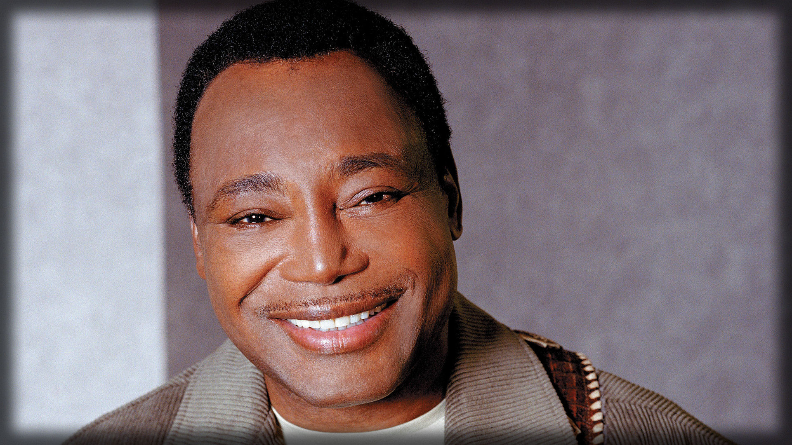
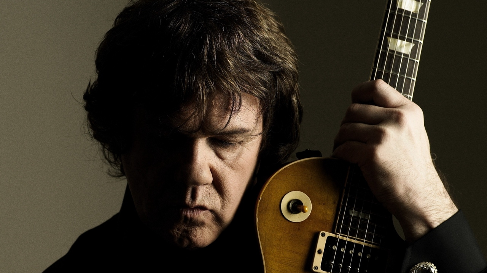
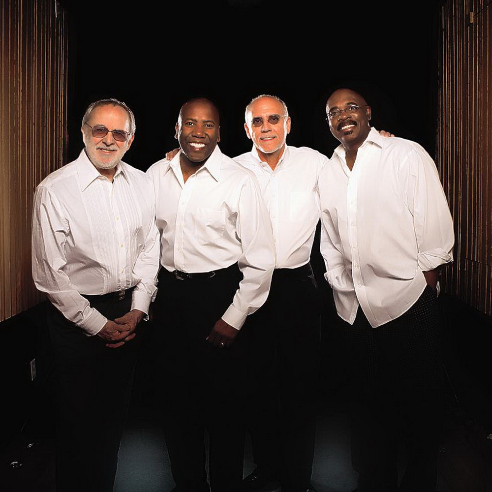
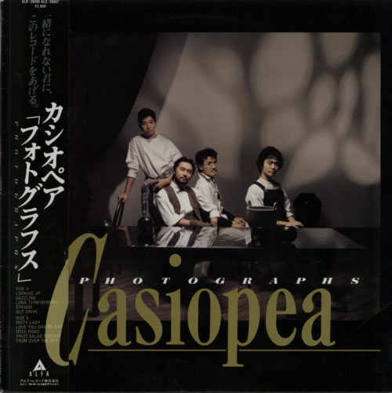

Guitar Magicians


“Music is a language that doesn’t speak in particular words. It speaks in emotions, and if it’s in the bones, it’s in the bones.” ― Keith Richards
Legends Live Forever
Greatest Bands



Music is a language of emotion in that it can represent different feelings and barge into the soul with no boundaries or limitations.